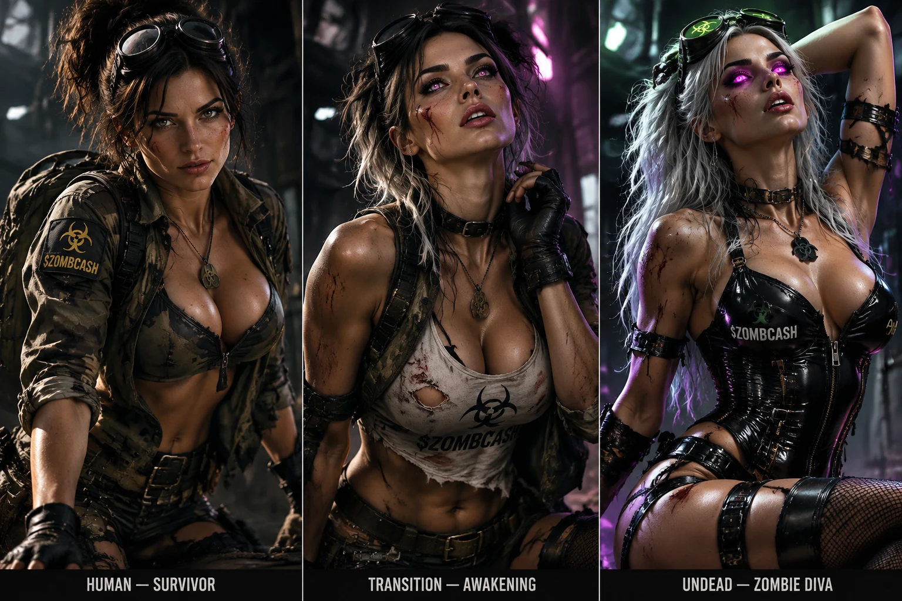
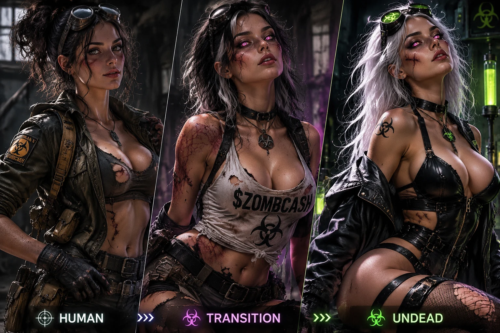
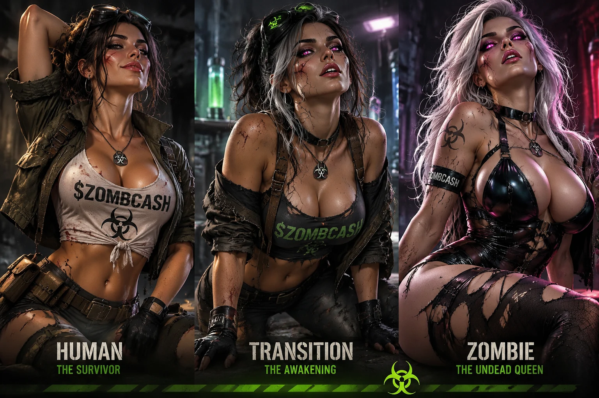
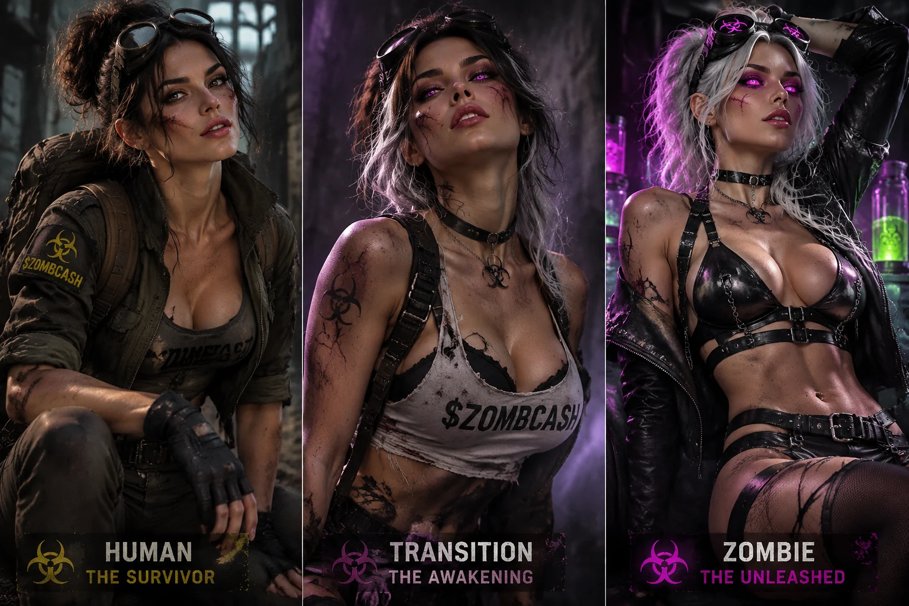
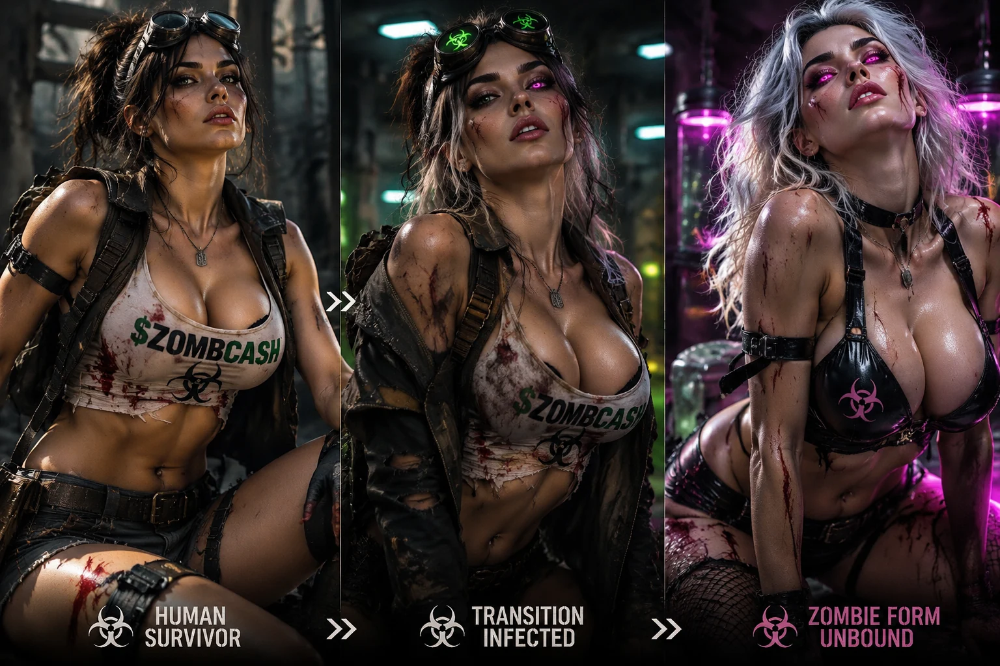
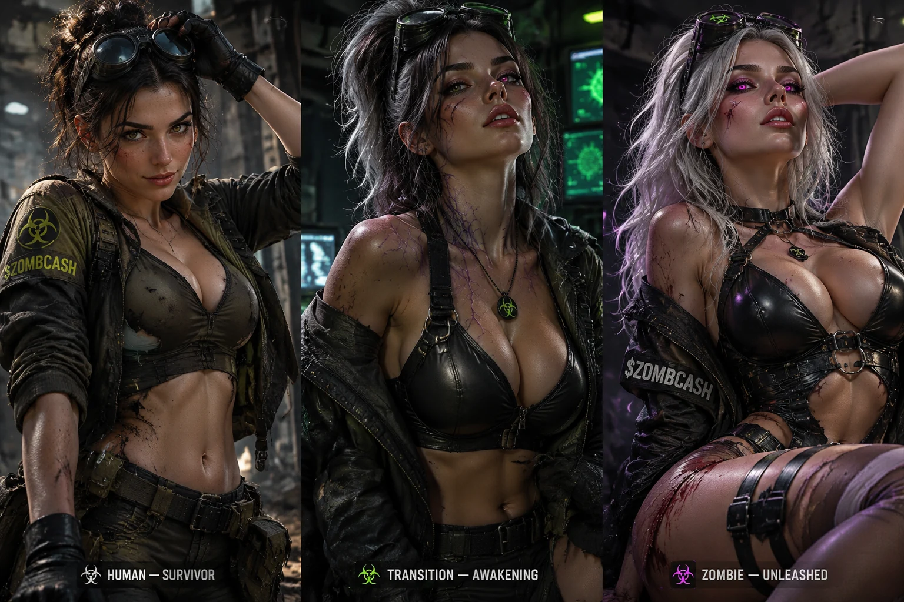
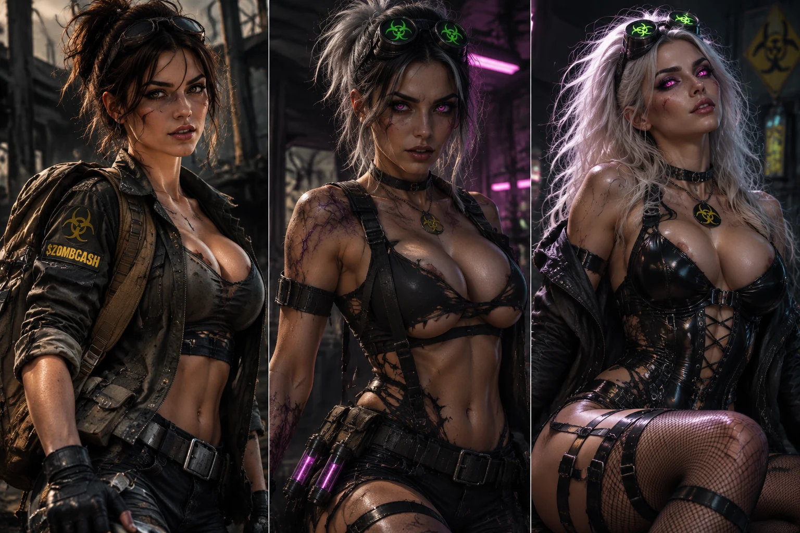
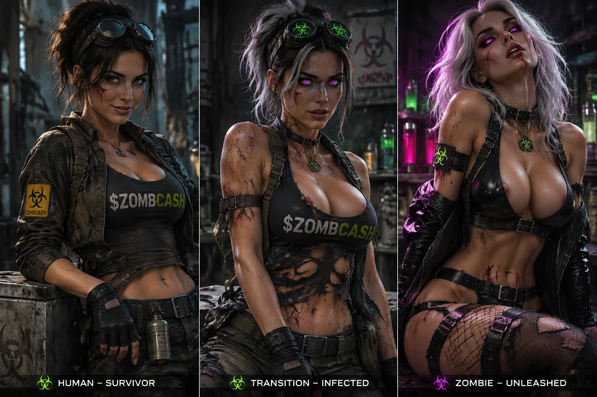

These are exploratory triptych drafts for choosing the character direction, not the final single-image identity references. The same heroine should retain one recognizable face across all forms.







